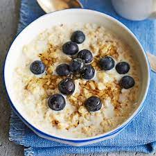

oatmeal
Basic Oatmeal

Ingredients
- 1 cup oatmeal
- 1.5 cup milk of choice
- 1 tbs maple syrup
- toppings of your choice! Apple, strawberry, or whatever
Directions
- In a pot, bring the milk to boil.
- Add to maple syrup.
- Add the oatmeal and cook for 10 minutes until the oats are soft and creamy.
- Pour to a bowl and add your toppings
- Enjoy the healthy choice you made.
More Recipes